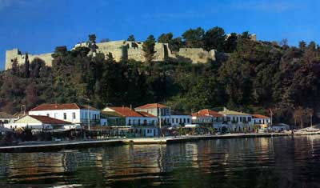

Το κάστρο της Βόνιτσας
Όλα τα κάστρα χαίρονται κι όλα καμάρι σέρνουν, |
 Το κάστρο χρονολογείται από τη Βυζαντινή περίοδο (αναφορά του Ιωάννη Καντακουζηνού, 1339), ενώ οι Ενετοί επέκτειναν τις οχυρώσεις του προς τα νοτιοδυτικά. Οι Γάλλοι, στο τέλος του 18ου αι., πρόσθεσαν τους προμαχώνες. Η Βόνιτσα τελούσε υπό τουρκική κατοχή κατά το διάστημα 1449 έως 1684, οπότε πέρασε στα χέρια των Βενετών (Μοροζίνι) μέχρι την κατάλυση του Ενετικού κράτους (1797). Στο κάστρο παρέμεινε η τουρκική φρουρά της πόλης κατά τα χρόνια της Ελληνικής Επανάστασης, έως ότου παραδοθεί (Μάρτιος 1829). | ||